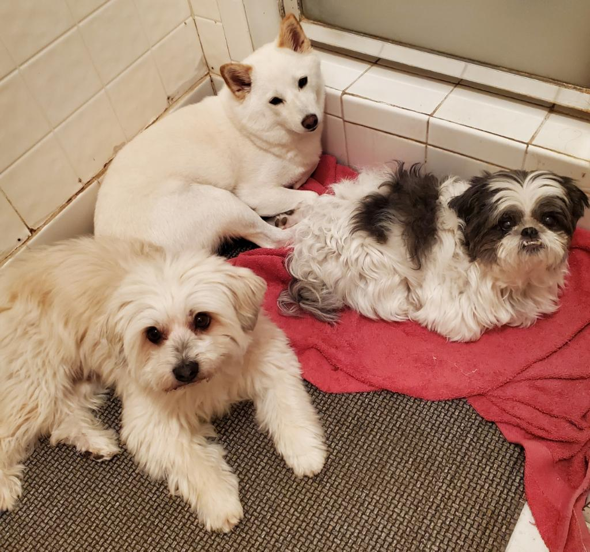

My name is Jasmine Maokhamphiou and I'm a freshman at UNM in the School of Architecture and Planning. I am aiming towards a concentration in Design Studies.
I am very passionate about art and I love drawing, especially characters from my favorite video games. I have always taken an interest in the design process and follow many artists, ranging from artists from way back then to more contemporary artists. I also have a hobby of turning my art into merchandise which is something I only just recently got into. I created these strawberry frog keychains that I got from a website called Vograce and I'm absolutely obsessed !
Here is the sample I got from the company.

If I ever get the chance to create more keychains I would love to draw some characters or make more cute frog themed keychains. I also adore making stickers, but I want to start sourcing it from other places since making it by hand is very tedious and time consuming.
I have a hobby of collecting various art in the form of prints, keychains, and enamel pins. One of my favorite hobbies I loved to indulge in is gaming. Some of my top picks include Genshin Impact, Valorant, and I have recently picked up Honkai Star Rail! These aren't the only games I like to play though, I also love playing with friends especially horror games since the experience can be chaotic.
I also adore all my dogs (Mochi's my favorite though). Here's a photo of them :)
Meelo on the left, Yuki in the Middle, and Mochi on the Right